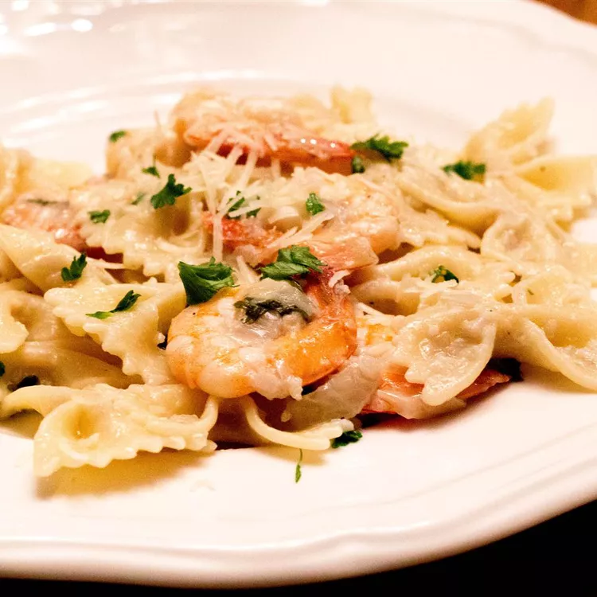

Ultimate Shrimp Scampi

Shrimp Scampi prepared with Asiago cheese, white wine and fresh parsley.
Ingredients
- 1 (16 ounce) package angel hair pasta
- ½ cup butter
- ½ cup minced onion
- ¼ cup lemon juice
- 4 cloves garlic, minced
- 1 tablespoon chopped fresh parsley
- 1 teaspoon dry white wine
- 1 teaspoon salt
- ½ teaspoon black pepper
- 1 dash Worcestershire sauce
- 1 pound peeled and deveined medium shrimp
- ½ cup Asiago cheese, diced
- 1 large avocado - peeled, pitted and diced
- Bring a large pot of lightly salted water to a boil.
Cook pasta in boiling water until tender yet firm to the bite, 2 to 3 minutes; drain.
- Melt butter in a large skillet over medium heat.
Add onion, lemon juice, garlic, parsley, white wine, salt, pepper, and Worcestershire sauce;
cook and stir until mixture bubbles. Increase heat to medium-high and stir in shrimp.
Cook and stir until shrimp turn pink and opaque, about 5 minutes.
- Serve shrimp scampi over pasta. Sprinkle with Asiago cheese and avocado to serve.